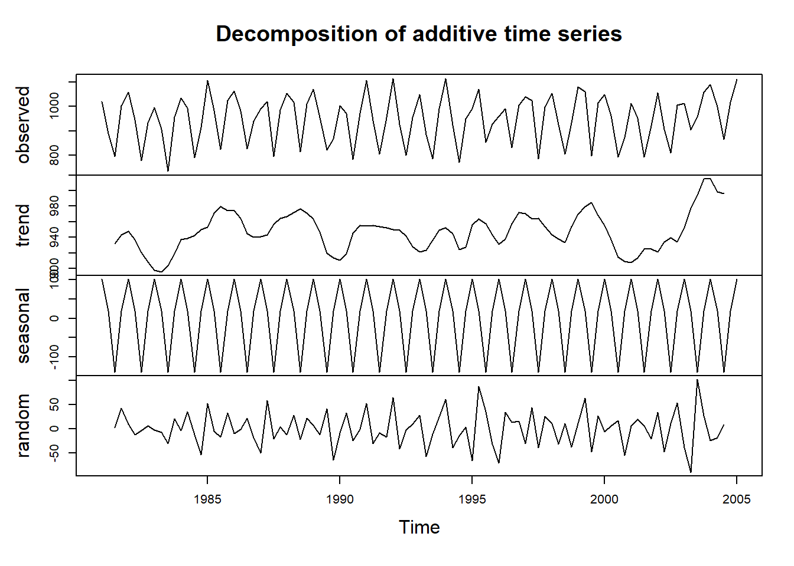
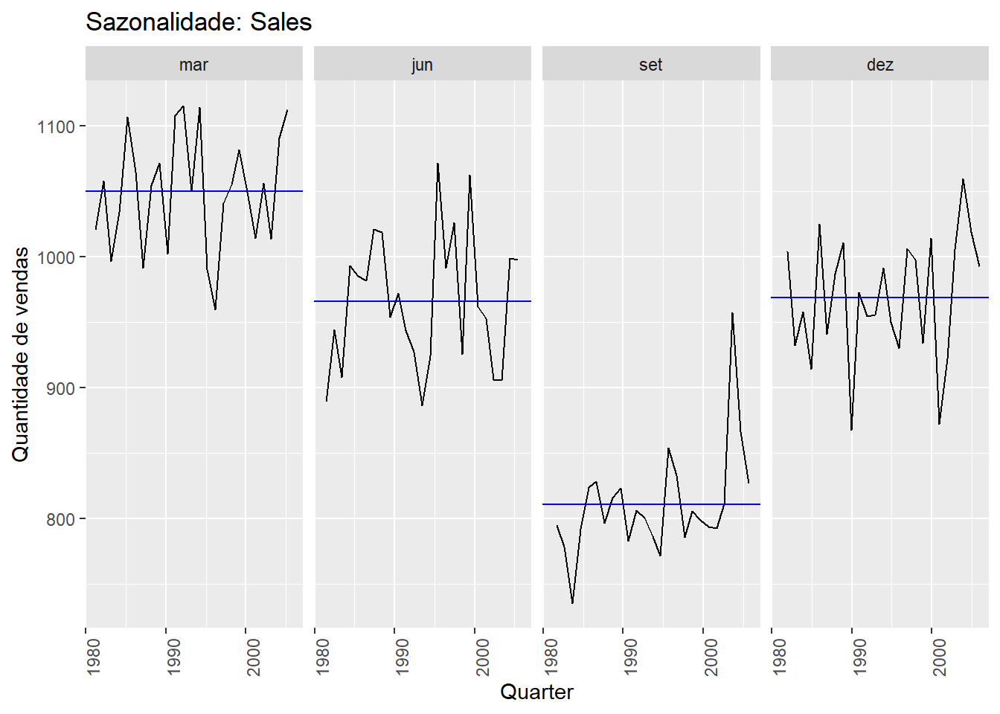

## Bibliotecas de séries temporais
library(TSA)
library(forecast)
library(fpp3)Primeiros passos para visualização de séries
Visualização de dados temporais
### Carregando banco de dados em formato csv
tute1 <- readr::read_csv("C:/Users/pedro/Dropbox/disciplinas_UEPB/Series_Temporais/tute1.csv")
head(tute1)# A tibble: 6 x 4
Quarter Sales AdBudget GDP
<date> <dbl> <dbl> <dbl>
1 1981-03-01 1020. 659. 252.
2 1981-06-01 889. 589 291.
3 1981-09-01 795 512. 291.
4 1981-12-01 1004. 614. 292.
5 1982-03-01 1058. 647. 279.
6 1982-06-01 944. 602 254 Formato TS
## Transformando a variavel Sales no formato TS
y = ts( tute1$Sales, start = 1981,end = 2005, frequency = 4 )
plot.ts( y )
plot(decompose(y))
Usando o formato tstible
### transformando para o formato tstible
serie <- tute1 %>%
mutate(Quarter = yearmonth(Quarter)) %>%
as_tsibble(index = Quarter)
serie# A tsibble: 100 x 4 [3M]
Quarter Sales AdBudget GDP
<mth> <dbl> <dbl> <dbl>
1 1981 mar 1020. 659. 252.
2 1981 jun 889. 589 291.
3 1981 set 795 512. 291.
4 1981 dez 1004. 614. 292.
5 1982 mar 1058. 647. 279.
6 1982 jun 944. 602 254
7 1982 set 778. 531. 296.
8 1982 dez 932. 608. 272.
9 1983 mar 996. 638. 260.
10 1983 jun 908. 582. 280.
# ... with 90 more rows### Plot das series
serie %>%
pivot_longer(-Quarter) %>%
ggplot(aes(x = Quarter, y = value, colour = name)) +
geom_line() +
facet_grid(name ~ ., scales = "free_y")
Extraindo os componentes de uma serie temporal
Decomposição aditiva
serie %>%
model(
classical_decomposition(Sales, type = "additive")
) %>%
components() %>%
autoplot() +
labs(title = "Decomposição classica aditiva do total de vendas")Warning: Removed 2 row(s) containing missing values (geom_path).
Decomposição multiplicativa
serie %>%
model(
classical_decomposition(Sales, type = "multiplicative")
) %>%
components() %>%
autoplot() +
labs(title = "Decomposição classica aditiva do total de vendas")Warning: Removed 2 row(s) containing missing values (geom_path).
Identificando se existe sazonalidade na série
### Estudando a sazonalidade
serie %>%
gg_season(Sales, labels = "both") +
labs(y = "Quantidade de vendas",
title = "Sazonalidade: Sales")
### subgraficos
serie %>%
gg_subseries(Sales) +
labs(
y = "Quantidade de vendas",
title = "Sazonalidade: Sales"
)